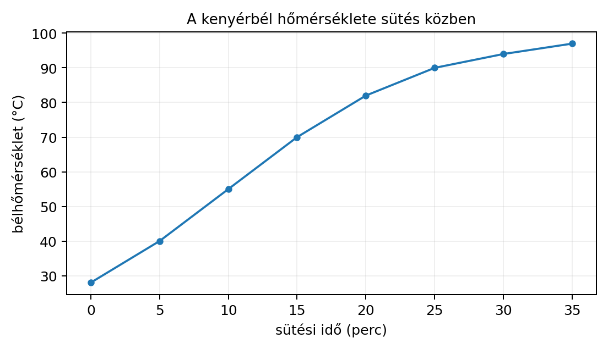

Hajnali öt óra, a kemence felfűtve, az első kenyértészták megkelve, és már a kemence szája előtt várnak. A pék azonban nem csak annyit dönt el, hogy „betolja” a tésztát. Tudnia kell, milyen hőmérsékletű a kemence, mennyi ideig kell sütnie az adott tömegű és alakú terméket, mikor lehet kiszedni, és hogyan kell mindezt úgy dokumentálni, hogy a HACCP-ellenőrzés is megállja a helyét. Ha a sütési idő túl rövid, a bélzet ragacsos, nyers marad; ha túl hosszú, a héj megég, a termék kiszárad, és a veszteség is nő. Kemencefelfűtés, vetés, sütési sorrend és gőzölés alfejezetben már előkészítetted a sütést; itt a kemencébe helyezés utáni döntéseket és műveleteket tanulod meg.
A sütés során a termék bélhőmérséklete fokozatosan emelkedik, a héj színe pedig a kemence hőmérsékletétől és a sütési időtől függ. A következő görbe egy 1 kg-os búzakenyér tipikus bélhőmérséklet-emelkedését mutatja szemléltető jelleggel.

A görbe azt mutatja, hogy az utolsó percekben a bélhőmérséklet már alig emelkedik, de a bélzet szerkezete és a héj színe még változik. Ezért az átsültség ellenőrzését nem szabad csak az időre bízni.
Definíció. A sütési idő az az időtartam, amíg a termék a kemencében vagy sütőtérben hőkezelést kap, a vetéstől (betolástól) a kisütésig (kivételig). A sütési hőmérséklet a kemence beállított vagy mért hőmérséklete a sütési folyamat alatt. Az átsültség azt jelenti, hogy a termék bélzete a teljes keresztmetszetben elérte azt a hőmérsékletet és szerkezeti állapotot, amelynél a keményítő elcsirizesedett, a sikér megalvadt, és a termék a rá jellemző, fogyasztásra alkalmas állagot elérte.
Szabály. A sütési idő és hőmérséklet termékfüggő. Tömeg, alak, összetétel, kemence típusa és a betöltött mennyiség együtt határozza meg. Tájékoztató tanulási példaként: 1 kg-os búzakenyeret 220–240 °C-on 30–40 percig, 0,5 kg-os kenyérkét 220–240 °C-on 25–30 percig, 50–60 g-os zsemlét 220–240 °C-on 12–18 percig sütünk (ellenőrizendő: üzemi technológiai lap, kemence gyártói adatlap, termékspecifikáció). A kisebb tömegű és laposabb termék sütési ideje rövidebb, hőmérséklete azonos vagy általában magasabb (a lényegesen kisebb tömegű zsemle például a kenyérnél jellemzően nem alacsonyabb hőn sül); a nagyobb tömegű és magasabb termékhez hosszabb idő, szükség esetén alacsonyabb hőmérséklet kell, hogy a hő a bélzet közepéig bejusson anélkül, hogy a héj megégjen.
Megjegyzés (tapasztalati irányszám). Azonos alakú termékre, azonos kemencében a sütési idő durva becslésére egyes üzemek a következő irányszámot használják: ahol a sütési idő percben, a termék tömege kg-ban, pedig termék- és kemencefüggő állandó (például 1 kg-os kenyérre perc/kg). Ez nem fizikai törvény (a tiszta hővezetés -os függést adna), és más alakú vagy más hőmérsékleten sütött termékre (kenyér → zsemle) nem vihető át. Mindig a termékspecifikus technológiai lap, a próbasütés és a maghőmérséklet az irányadó.
Szabály. A sütés a HACCP-rendszerben jellemzően kritikus szabályozási pont (CCP), mert a sütőipari termékek esetében itt csökkennek a kórokozó mikroorganizmusok elfogadható szintre, és itt alakul ki a biztonságos, tartós termék. A CCP jellemző határértéke a maghőmérséklet: a termék bélzetének közepén mért hőmérséklet a sütés végén. Kenyérféléknél ez jellemzően 96–98 °C, de a pontos értéket a pékség HACCP-terve és a termékspecifikáció adja meg (ellenőrizendő).
Definíció. A kisütés (kivétel, kemencéből való eltávolítás) az a művelet, amikor az átsült terméket a sütőtérből eltávolítják. A mosdatás a tésztadarab felületének vetés előtti, vízzel, tojásos vízzel vagy más lekenő anyaggal történő kezelése (ezt a vetés-előkészítés tárgyalja), illetve a kisütött, forró termék felületének vízzel, gőzzel vagy keményítőoldattal való kezelése; ebben az alfejezetben a kisütés utáni mosdatásról van szó, amely a héjat fényessé, rugalmassá teszi, és lassítja a kihűlés utáni túlzott kiszáradást.
Sütési paraméterek kiválasztása. A pék a technológiai lap alapján beállítja a kemence hőmérsékletét és a sütési időt. A hőmérsékletet a termék tömege, alakja, a kemence típusa és az aktuális betöltés mértéke szerint állítja be a sütés előtt; sütés közben nem soronként módosít. Rakott kemencénél az ajtóhoz közeli sor jellemzően hűvösebb; ezt a vetési renddel vagy az ottani termékek sütési idejével egyenlíti ki (ellenőrizendő: a kemence hőmérséklet-eloszlásának mérése, gépkönyv).
Vetés és gőzölés. A megkelt tésztát a Kemencefelfűtés, vetés, sütési sorrend és gőzölés alfejezetben leírtak szerint a kemencébe helyezik, és elvégzik az előírt gőzölést.
Sütési idő ellenőrzése. A beállított idő lejárta előtt a pék nem nyitja feleslegesen a kemenceajtót, mert a hőmérséklet-ingadozás a kenyér „leülését” okozhatja. Az utolsó percekben kopogtatással és maghőmérővel ellenőrzi az átsültséget.
Átsültség ellenőrzése. A termék alját megkopogtatják: a jól átsült kenyér kongó, üreges hangot ad. A maghőmérőt a termék közepébe szúrják: a bélhőmérséklet eléri a HACCP-tervben előírt értéket (jellemzően 96–98 °C). Ha szükséges, próbasütésből származó mintát vágnak fel, és megnézik a bélzet rugalmasságát, száraz tapintását.
Kisütés lapáttal vagy szalagról. Rakott vagy alagútkemencénél a kész terméket sütőlapáttal vagy automatikus kiszedő szerkezettel kiemelik; szalagos kemencénél a sütőszalag kihordja a terméket, és az elszedő személy vagy berendezés a hűtőrácsra helyezi.
Kocsira rakás. A kisütött terméket óvatosan, rácskocsira vagy hűtőpolcra helyezik, ügyelve arra, hogy a forró termékek ne érjenek össze szorosan, mert a gőz a héjat felpuhítaná. A kocsit hűvös, pormentes, huzatmentes helyre tolják.
Mosdatás. Ha a technológia előírja, a forró termék felületét tiszta vízzel, gőzzel vagy keményítőoldattal permetezik. A mosdatást a kisütés után minél hamarabb, de csak a megfelelő eszközzel (pl. permetező, ecset) végzik, kerülve a termék többszöri, felesleges érintését.
Dokumentálás. A pék rögzíti a sütési naplóban a sütési időt, hőmérsékletet, a maghőmérsékletet, a CCP-ellenőrzés eredményét. Az esetleges eltérést és helyesbítő intézkedést is beírja.
Példa 1: 1 kg-os búzakenyér sütési paramétereinek meghatározása
Adott: 1 kg-os búzakenyér, kemence hőmérséklete 230 °C légkeringetéses rakott kemencében, a technológiai lap szerinti tájékoztató sütési idő 35 perc (ellenőrizendő: üzemi technológiai lap). A pék a 30. percben megkopogtatja: a hang még tompa. A maghőmérséklet 94 °C (a fenti szemléltető görbe 30. percbeli értéke). A HACCP-határ 96 °C. A pék visszazárja az ajtót, és további 5 percig süti. A 35. percben a kopogtatás kongó, a maghőmérséklet 97 °C. A termék átsült, kisütés következik. Figyeld meg: az utolsó 5 percben a bélhőmérséklet már csak 3 °C-kal emelkedett, a görbe ellaposodik – ezért kell a határ közelében mérni, és nem elég az órára hagyatkozni.
Számítás. Itt nem képletszerű, hanem ellenőrzési logika van: a sütési időt nem önmagában, hanem a mért maghőmérséklettel együtt tekintjük. A CCP-határ elérése előtt a termék nem süthető ki. A mért érték (97 °C) ≥ határ (96 °C), tehát az eljárás megfelel.
Példa 2: 0,5 kg-os kenyér sütési idejének becslése a tömeg alapján (azonos alak, azonos kemence)
Adott: 0,5 kg tömegű, azonos alakú kenyér. Ismerünk egy technológiai lapot, amely szerint 1 kg-os kenyérre azonos kemencehőmérsékleten (itt 230 °C) a sütési idő 35 perc, és tapasztalati közelítésként . A kisebb kenyér várható sütési ideje: Behelyettesítve: Ellenőrzés: a 0,5 kg-os kenyér a feleakkora tömegű, a harmadik gyök kb. 0,79, így a ~28 perc reális (a fenti tanulási tartomány azonos, 220–240 °C-os kemencehőmérsékletre: 25–30 perc). A zsemlére ez az irányszám nem vihető át: ott magasabb hőmérsékleten, 220–240 °C-on 12–18 perc a jellemző (ellenőrizendő: termékspecifikáció).
Előírás. A sütőipari termékek hőkezelésére vonatkozóan a 852/2004/EK rendelet és a Magyar Élelmiszerkönyv előírásai szerint a sütés során a terméknek el kell érnie azt a hőmérséklet-idő kombinációt, amely a mikrobiológiai biztonságot garantálja. A pontos határértéket a pékség HACCP-terve és a termék gyártmánylapja határozza meg (ellenőrizendő: a konkrét CCP-határértékek). A sütési napló vezetése a 852/2004/EK szerinti dokumentációs kötelezettség része (ellenőrizendő).
Egy közepes méretű pékségben a péksütemény-sor szalagos kemencéjénél a reggeli csúcsban a zsemlék elszedése gyorsan történt. Az egyik tanuló a szalagról úgy szedte le a terméket, hogy azok szorosan, gőzölögve kerültek a kocsira. A héj felpuhult, a zsemlék összenyomódtak. A minőségi reklamáció miatt a műszakvezető megmutatta: a zsemléket egymástól kissé távol, rácsos kocsira kell helyezni, és a mosdatást csak vékony vízpermettel, nem bőségesen szabad végezni. A tanulság: a kisütés és a kocsira rakás nem csak szállítási művelet, hanem minőségbefolyásoló lépés.
Cél: A sütési idő és hőmérséklet ellenőrzése, az átsültség megállapítása, a termék szakszerű kisütése, kocsira helyezése, mosdatása és a sütési napló kitöltése.
Eszközök és anyagok: sütőlapát vagy elszedő eszköz, maghőmérő, tiszta rácskocsi, permetező, tiszta víz vagy előírt mosdatóoldat, sütési napló, toll, technológiai lap.
Higiénia. A művelet előtt ellenőrizd a munkaruha tisztaságát, a kézmosást, az eszközök (lapát, maghőmérő) tisztaságát és sérülésmentességét. A maghőmérő szúrófejét használat előtt fertőtlenítsd (pl. élelmiszeripari felülettisztítóval, a gyártói utasítás szerint – ellenőrizendő). A lapátot és a kocsit ne tedd a földre.
Gépbiztonság. A kemence forró felületéhez ne érj; a sütőlapátot csak a nyélrészénél fogd. A szalagos kemence elszedőhelyénél a vészleállító és a szalagleállító ismerete kötelező. A forró terméket csak védőkesztyűvel vagy a lapáttal érintsd. A maghőmérőt óvatosan szúrd be, hogy a forró gőz ne csapjon az arcodba.
Számozott műveletsor:
Tipikus hibák:
HACCP. A sütés jellemzően CCP. A kritikus határ a termék bélhőmérséklete a sütés végén. A monitoring a maghőmérővel történik, minden tételnél (vagy a tervben előírt mintavétellel). A határértéket a HACCP-terv adja meg. Eltérés esetén (a maghőmérséklet a határ alatt): a terméket tovább sütik, és újra mérnek; ha a tovább sütés nem lehetséges (például a héj megégne, vagy a tétel már kikerült a kemencéből), a tételt elkülönítik, visszatartják, és a műszakvezető a HACCP-terv szerint dönt, például megsemmisítés (ellenőrizendő: a pékség HACCP-terve). A mérési eredményt a CCP-lapon rögzítik. A dokumentumon szerepelnie kell a terméknek, a tételnek, az időpontnak, a mért értéknek, a határnak, az észlelőnek.
A sütési napló és a CCP-lap egyesíthető, de a CCP-ellenőrzés eredményét egyértelműen ki kell emelni. A napló vezetése történjen azonnal, tollal, javítás nélkül; javításnál áthúzással, olvashatóan, dátummal és aláírással (lásd Kritikus szabályozási pontok, határértékek, monitoring és dokumentáció).
A sütési művelet minőségi jellemzői:
Hiba: A sütési idő és hőmérséklet rossz megválasztása miatt a termék túl száraz, túl sápadt, vagy a héj repedezett.
A válaszok a Megoldások elején, „Önellenőrzés – válaszok” alcím alatt találhatók.
1. feladat (A). Sorold fel, milyen tényezők befolyásolják a sütési idő és hőmérséklet megválasztását!
2. feladat (A). Fogalmazd meg, mit jelent az átsültség, és nevezd meg a két leggyakoribb ellenőrzési módját!
3. feladat (B). Egy 0,8 kg-os kenyér sütési idejét szeretnéd becsülni. Egy 1 kg-os kenyérre a technológiai lap 35 percet ír elő. Becsüld a sütési időt a közelítéssel, feltételezve, hogy a kemence hőmérséklete azonos! Mennyi az eltérés a 35 perchez képest?
4. feladat (B). Egy pékségben a zsemléket 60 g-os késztömeggel sütik. A technológiai lap szerint a sütési idő 14 perc 230 °C-on. Az egyik tételnél a kemence hőmérséklete 210 °C-ra esett le. Mit teszel? Magyarázd el, miért nem elég meghosszabbítani az időt!
5. feladat (C). Egy tétel kenyérnél a sütési naplóba ezt írták be: „kemence 230 °C, sütési idő 30 perc, kopogtatás tompa, maghőmérséklet 89 °C, kisütve.” Értékeld a bejegyzést! Milyen hibát találsz, és mi lett volna a helyes eljárás?
6. feladat (D). A gyakorlati útmutató szerint végezd el a sütés utolsó ellenőrzését és a kisütés utáni műveleteket egy 1 kg-os kenyérnél. Írd le a mérési eredményeket egy képzeletbeli sütési naplóba! A mért maghőmérséklet 97 °C, a HACCP-határ 96 °C, a kopogtatás kongó. Milyen bejegyzéseket teszel, és mit jelölsz a CCP-lapon?
1. feladat (A). A sütési időt és hőmérsékletet befolyásolja a termék tömege, alakja, tésztájának összetétele, a kemence típusa, a hőátadás módja, a betöltött mennyiség, a sütőlemez vagy szalag hőmérséklete, valamint a gőzölés mértéke.
2. feladat (A). Az átsültség azt jelenti, hogy a termék bélzete a teljes keresztmetszetben elérte a biztonságos és fogyasztásra alkalmas hőmérsékletet, a keményítő elcsirizesedett, a sikér megalvadt, és a bélzet rugalmas, nem ragadós. Ellenőrzése kopogtatással és maghőmérővel (szükség esetén vágási próbával) történik.
3. feladat (B). Adott: , , . Keresett: . Képlet: Behelyettesítés: Ellenőrzés: a 0,8 kg kisebb tömegű, rövidebb sütési időt igényel; a 32,5 perc reális. Az eltérés 35 − 32,5 = 2,5 perc.
4. feladat (B). Ha a kemence hőmérséklete 230 °C-ról 210 °C-ra esik le, akkor nem szabad egyszerűen meghosszabbítani a sütési időt. Az alacsonyabb hőmérsékleten a héjszín és a bélzet hőkezelése nem fut együtt ugyanúgy, mint a tervezett hőmérsékleten; a termék kiszáradhat, a héj vastagabb lesz, és a mikrobiológiai biztonság sem feltétlenül teljesül. Először a kemence hőmérsékletét kell visszaállítani a technológiai értékre, és a tételt addig tartani, amíg a maghőmérséklet el nem éri a HACCP-határt. Ha a hőmérséklet-tartás nem lehetséges, a tételt meg kell jelölni, és a műszakvezető dönt.
5. feladat (C). A bejegyzés hibás: a kopogtatás tompa, a maghőmérséklet 89 °C, ami a feltételezett HACCP-határ (pl. 96 °C) alatt van. Ilyen állapotban a terméket nem szabad kisütni. Helyes eljárás lett volna: tovább sütni, amíg a kopogtatás kongó nem lesz, és a maghőmérséklet el nem éri a határértéket. Mivel a bejegyzés szerint a tétel már kikerült („kisütve”), azonnal el kell különíteni és vissza kell tartani; a műszakvezető a HACCP-terv szerint dönt (visszasütés, ha a termék állapota engedi, vagy selejtezés), és a döntést, a mért értéket és az okot a CCP-lapra kell írni (ellenőrizendő: a pékség HACCP-terve). A naplóba be kell jegyezni az eltérést és a helyesbítést, majd az új mérési eredményt.
6. feladat (D). A gyakorlati útmutató szerint:
A sütési idő és hőmérséklet meghatározása termékfüggő: a tömeg, az alak, az összetétel, a kemence típusa és a betöltés együtt szabja meg. Tájékoztató tanulási példaként 1 kg-os kenyér 220–240 °C-on 30–40 percig, zsemle 220–240 °C-on 12–18 percig sül (ellenőrizendő). Az átsültség ellenőrzése a sütés végén kötelező: kopogtatással (kongó hang) és maghőmérővel (jellemzően 96–98 °C, a HACCP-határ szerint). A sütés CCP, ezért a maghőmérsékletet minden tételnél mérni és dokumentálni kell. A kisütés lapáttal vagy szalagról, a forró termék kocsira rakása légréssel, a mosdatás vékony permetezéssel történik. A sütési napló tartalmazza a terméket, tételszámot, kemencehőmérsékletet, sütési időt, mért maghőmérsékletet, kopogtatás eredményét, eltérést és aláírást. Továbbvitt eredmények: a sütési paraméterek és a dokumentálás alapja a Hűtés, tárolás és a termék öregedése, a Búzakenyér és fehér kenyér előállítása és a Gyakorlati vizsgafeladat: termékkészítés a technológiai laptól a minősítésig alfejezeteknek.